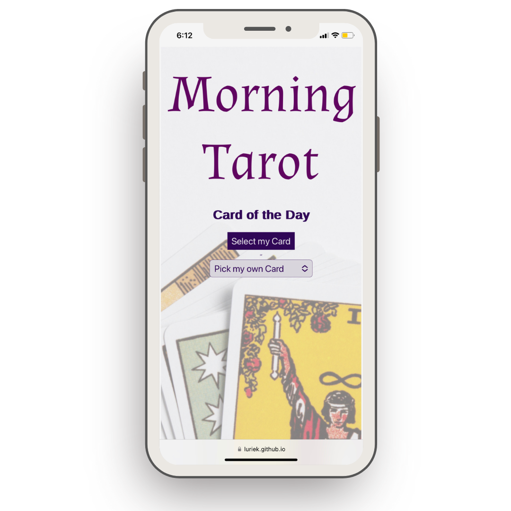
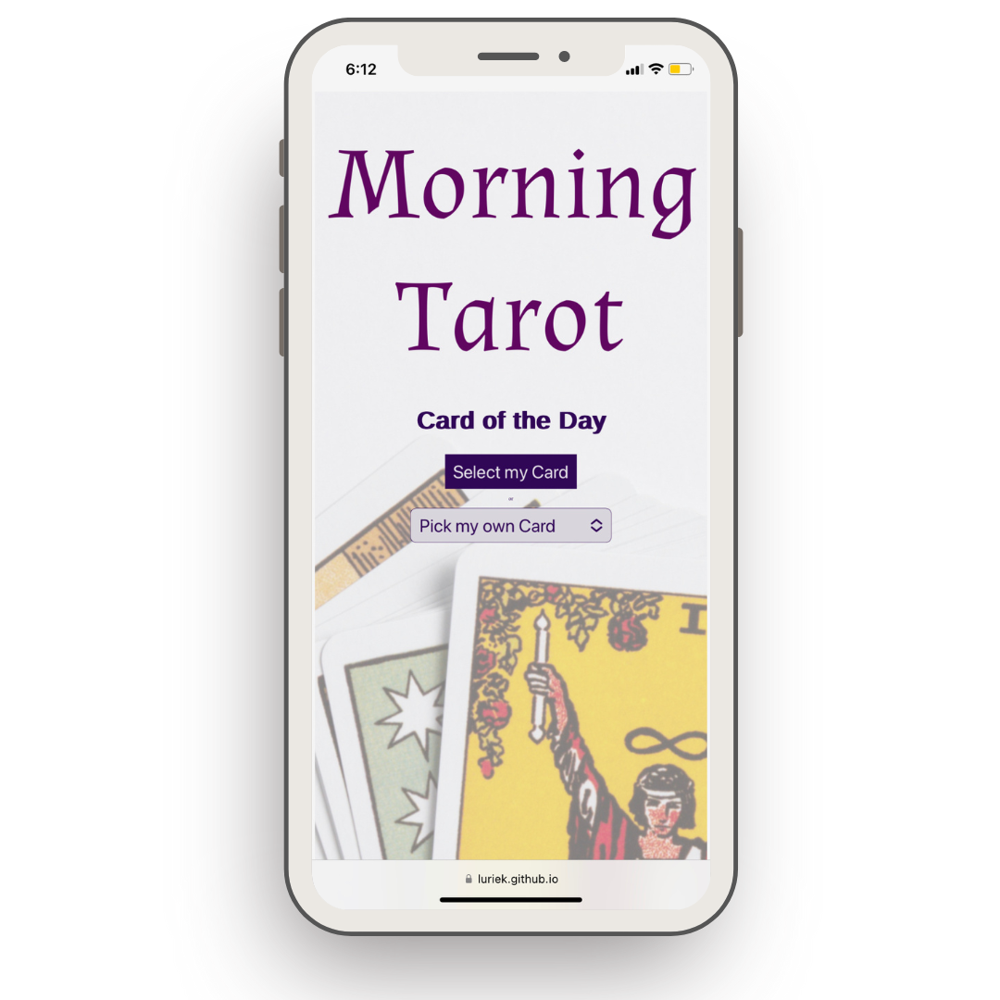

I'm a front-end developer (React, JavaScript, CSS) with a passion for emerging technologies and a knack for remote collaboration. With four years of remote work under my belt, I know how to work effectively with global teams and meet tight deadlines. My unique and diverse background in entrepreneurship, teaching, and religious scholarship has instilled in me an owner's mentality and a unique perspective I bring to my all my tech projects.
Driven by curiosity and a desire to make people's lives easier, I'm particularly enthusiastic about how technologies like AI can be harnessed to create groundbreaking solutions that have real-world impact.
I am excited to contribute my coding expertise and comprehensive skill set, including social media management and client relationship management, to a team where I will bring my passion and innovative thinking to life-changing projects.
What a pleasure to work with Lurie! She programmed the website for my artistic education project for me. On the one hand, I was very impressed with her programming skills. On the other hand, she took the project and its external image to the next level with her creative ideas. It was special to me to experience that level of co-creation with a programmer. I really want to say: thank you, Lurie, for your professional cooperation and support in marketing.
"Today's To-Dos" is a responsive web application built with React.js, allowing users to manage categorized to-do lists. It uses React components for efficient rendering and React hooks for state management. The application leverages the Local Storage API, useState, and useEffect to save and load lists seamlessly across sessions. Its design emphasizes a clean, intuitive UI and a well-organized codebase, demonstrating adept use of modern JavaScript and React development practices.
"Today's To-Dos" is a responsive web application built with React.js, allowing users to manage categorized to-do lists. It uses React components for efficient rendering and React hooks for state management. The application leverages the Local Storage API, useState, and useEffect to save and load lists seamlessly across sessions. Its design emphasizes a clean, intuitive UI and a well-organized codebase, demonstrating adept use of modern JavaScript and React development practices.


 

"Morning Tarot" is a web application developed using HTML, CSS, and JavaScript. It delivers daily tarot readings to users with the aid of the OpenAI's ChatGPT API. The requests to the API are managed server-side by an Node.js/Express.js application that utilizes async/await syntax for promise handling, ensuring consistent, unique, and accurate tarot card predictions. The design is clean, intuitive, and responsive, offering users an easy-to-navigate interface where they can select a specific tarot card or have a random one chosen for them. The application also securely stores the API key in a .env file, and it's deployed on Vercel for seamless user access.
"Today's To-Dos" is a responsive web application built with React.js,
allowing users to manage categorized to-do lists. It uses React components
for efficient rendering and React hooks for state management. The application
leverages the Local Storage API, useState, and useEffect to save and load lists seamlessly across
sessions. Its design emphasizes a clean, intuitive UI and a well-organized
codebase, demonstrating adept use of modern JavaScript and React development
practices.
"Morning Tarot" is a web application developed using HTML, CSS, and JavaScript.
It delivers daily tarot readings to users with the aid of the OpenAI's ChatGPT API.
The requests to the API are managed server-side by a Node.js/Express.js application that
utilizes async/await syntax for promise handling, ensuring consistent, unique,
and accurate tarot card predictions. The design is clean, intuitive, and
responsive, offering users an easy-to-navigate interface where they can select
a specific tarot card or have a random one chosen for them. The application
also securely stores the API key in a .env file, and it's deployed on Vercel
for seamless user access.